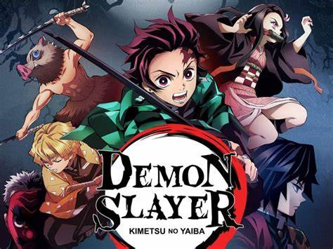
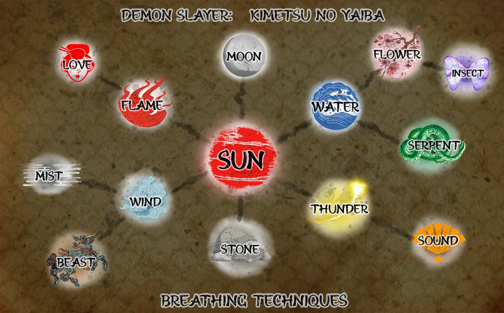

This site about slayers and demons from one manga "Kimetsu no Yaiba"
Ill try to say all about thems 
The fight in this manga is Sun people and Moon demons
Demons are stronger then people
But people maded breathing styles wich can help in defeating and people who fight with demons named slayers The First breathing is Sun from it come anoser breathing styles like:
Flame Love Water Flower Insect Serpent Thunder Sound Stone Wind Mist Moon 
Beast are special breathing style maded by Inosuke